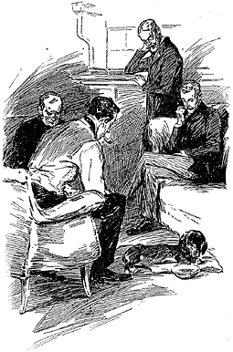
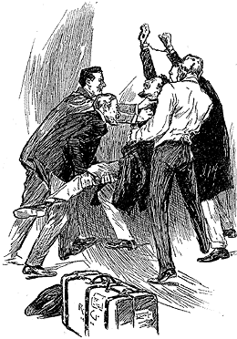

The intelligence with which Lestrade greeted us was so momentous and so unexpected that we were all three fairly dumbfoundered. Gregson sprang out of his chair and upset the remainder of his whiskey and water. I stared in silence at Sherlock Holmes, whose lips were compressed and his brows drawn down over his eyes.
"Stangerson too!" he muttered. "The plot thickens."
"It was quite thick enough before," grumbled Lestrade, taking a chair. "I seem to have dropped into a sort of council of war."
"Are you—are you sure of this piece of intelligence?" stammered Gregson.
"I have just come from his room," said Lestrade; "I was the first to discover what had occurred."
"We have been hearing Gregson's view of the matter," Holmes observed. "Would you mind letting us know what you have seen and done?"
"I have no objection," Lestrade answered, seating himself. "I freely confess that I was of the opinion that Stangerson was concerned in the death of Drebber. This fresh development has shown me that I was completely mistaken. Full of the one idea, I set myself to find out what had become of the secretary. They had been seen together at Euston Station about half-past eight on the evening of the third. At two in the morning Drebber had been found in the Brixton Road. The question which confronted me was to find out how Stangerson had been employed between 8.30 and the time of the crime, and what had become of him afterwards. I telegraphed to Liverpool, giving a description of the man, and warning them to keep a watch upon the American boats. I then set to work calling upon all the hotels and lodging-houses in the vicinity of Euston. You see, I argued that if Drebber and his companion had become separated, the natural course for the latter would be to put up somewhere in the vicinity for the night, and then to hang about the station again next morning."
"They would be likely to agree on some meeting-place before-hand," remarked Holmes.
"So it proved. I spent the whole of yesterday evening in making inquiries entirely without avail. This morning I began very early, and at eight o'clock I reached Halliday's Private Hotel, in Little George Street. On my inquiry as to whether a Mr. Stangerson was living there, they at once answered me in the affirmative.
"'No doubt you are the gentleman whom he was expecting,' they said. 'He has been waiting for a gentleman for two days.'
"'Where is he now?' I asked.
"'He is upstairs in bed. He wished to be called at nine.'
"'I will go up and see him at once,' I said.
"It seemed to me that my sudden appearance might shake his nerves and lead him to say something unguarded. The Boots volunteered to show me the room; it was on the second floor, and there was a small corridor leading up to it. The Boots pointed out the door to me, and was about to go downstairs again when I saw something that made me feel sickish, in spite of my twenty years' experience. From under the door there curled a little red ribbon of blood, which had meandered across the passage and formed a little pool along the skirting at the other side. I gave a cry, which brought the Boots back. He nearly fainted when he saw it. The door was locked on the inside, but we put our shoulders to it, and knocked it in. The window of the room was open, and beside the window, all huddled up, lay the body of a man in his nightdress. He was quite dead, and had been for some time, for his limbs were rigid and cold. When we turned him over, the Boots recognized him at once as being the same gentleman who had engaged the room under the name of Joseph Stangerson. The cause of death was a deep stab in the left side, which must have penetrated the heart. And now comes the strangest part of the affair. What do you suppose was above the murdered man?"
I felt a creeping of the flesh, and a presentiment of coming horror, even before Sherlock Holmes answered.
"The word RACHE, written in letters of blood," he said.
"That was it," said Lestrade, in an awe-struck voice; and we were all silent for a while.
There was something so methodical and so incomprehensible about the deeds of this unknown assassin, that it imparted a fresh ghastliness to his crimes. My nerves, which were steady enough on the field of battle, tingled as I thought of it.
"The man was seen," continued Lestrade: "A milk boy, passing on his way to the dairy, happened to walk down the lane which leads from the mews at the back of the hotel. He noticed that a ladder, which usually lay there, was raised against one of the windows of the second floor, which was wide open. After passing, he looked back and saw a man descend the ladder. He came down so quietly and openly that the boy imagined him to be some carpenter or joiner at work in the hotel. He took no particular notice of him, beyond thinking in his own mind that it was early for him to be at work. He had an impression that the man was tall, had a reddish face, and was dressed in a long, brownish coat. He must have stayed in the room some little time after the murder, for we found blood-stained water in the basin, where he had washed his hands, and marks on the sheets where he had deliberately wiped his knife."\
I glanced at Holmes on hearing the description of the murderer which tallied so exactly with his own. There was, however, no trace of exultation or satisfaction upon his face.
"Did you find nothing in the room which could furnish a clue to the murderer?" he asked.
"Nothing. Stangerson had Drebber's purse in his pocket, but it seems that this was usual, as he did all the paying. There was eighty odd pounds in it, but nothing had been taken. Whatever the motive of these extraordinary crimes, robbery is certainly not one of them. There were no papers or memoranda in the murdered man's pocket, except a single telegram, dated from Cleveland about a month ago, and containing the words, 'J. H. is in Europe.' There was no name appended to this message."
"And there was nothing else?" Holmes asked.
"Nothing of any importance. The man's novel, with which he had read himself to sleep, was lying upon the bed, and his pipe was on a chair beside him. There was a glass of water on the table, and on the window-sill a small chip ointment box containing a couple of pills."
Sherlock Holmes sprang from his chair with an exclamation of delight.
"The last link," he cried, exultantly. " My case is complete."
The two detectives stared at him in amazement.
"I have now in my hands," my companion said, confidently, "all the threads which have formed such a tangle. There are, of course details to be filled in, but I am as certain of all the main facts, from the time that Drebber parted from Stangerson at the station, up to the discovery of the body of the latter, as if I had seen them with my own eyes. I will give you a proof of my knowledge. Could you lay your hand upon those pills?"
"I have them," said Lestrade, producing a small white box; "I took them and the purse and the telegram, intending to have them put in a place of safety at the Police Station. It was the merest chance my taking these pills, for I am bound to say that I do not attach any importance to them."
"Give them here," said Holmes. " Now, Doctor," turning to me, "are those ordinary pills?"
They certainly were not: They were of a pearly grey colour, small, round, and almost transparent against the light. "From their lightness and transparency, I should imagine that they are soluble in water," I remarked.
"Precisely so," answered Holmes. "Now would you mind going down and fetching that poor little devil of a terrier which has been bad so long, and which the landlady wanted you to put out of its pain yesterday."
I went downstairs and carried the dog upstairs in my arms. Its laboured breathing and glazing eye showed that it was not far from its end. Indeed, its snow-white muzzle proclaimed that it had already exceeded the usual term of canine existence. I placed it upon a cushion on the rug.
"I will now cut one of these pills in two," said Holmes, and drawing his penknife he suited the action to the word. "One half we return into the box for future purposes. The other half I will place in this wine glass, in which is a teaspoonful of water. You perceive that our friend, the Doctor, is right, and that it readily dissolves."
"This may be very interesting," said Lestrade, in the injured tone of one who suspects that he is being laughed at; "I cannot see, however, what it has to do with the death of Mr. Joseph Stangerson."
"Patience, my friend, patience! You will find in time that it has everything to do with it. I shall now add a little milk to make the mixture palatable, and on presenting it to the dog we find that he laps it up readily enough."
As he spoke he turned the contents of the wine glass into a saucer and placed it in front of the terrier, who speedily licked it dry. Sherlock Holmes' earnest demeanour had so far convinced us that we all sat in silence, watching the animal intently, and expecting some startling effect. None such appeared, however. The dog continued to lie stretched upon the cushion, breathing in a laboured way, but apparently neither the better nor the worse for its draught.
Holmes had taken out his watch, and as minute followed minute without result, an expression of the utmost chagrin and disappointment appeared upon his features. He gnawed his lip, drummed his fingers upon the table, and showed every other symptom of acute impatience. So great was his emotion that I felt sincerely sorry for him, while the two detectives smiled derisively, by no means displeased at this check which he had met.
"It can't be a coincidence," he cried, at last springing from his chair and pacing wildly up and down the room; "it is impossible that it should be a mere coincidence. The very pills which I suspected in the case of Drebber are actually found after the death of Stangerson. And yet they are inert. What can it mean? Surely my whole chain of reasoning cannot have been false. It is impossible! And yet this wretched dog is none the worse. Ah, I have it! I have it! "With a perfect shriek of delight he rushed to the box, cut the other pill in two, dissolved it, added milk, and presented it to the terrier. The unfortunate creature's tongue seemed hardly to have been moistened in it before it gave a convulsive shiver in every limb, and lay as rigid and lifeless as if it had been struck by lightning.
Sherlock Holmes drew a long breath, and wiped the perspiration from his forehead. "I should have more faith," he said; "I ought to know by this time that when a fact appears to be opposed to a long train of deductions, it invariably proves to be capable of bearing some other interpretation. Of the two pills in that box, one was of the most deadly poison, and the other was entirely harmless. I ought to have known that before ever I saw the box at all."
This last statement appeared to me to be so startling that I could hardly believe that he was in his sober senses. There was the dead dog, however, to prove that his conjecture had been correct. It seemed to me that the mists in my own mind were gradually clearing away, and I began to have a dim, vague perception of the truth.
"All this seems strange to you," continued Holmes, "because you failed at the beginning of the inquiry to grasp the importance of the single real clue which was presented to you. I had the good fortune to seize upon that, and everything which has occurred since then has served to confirm my original supposition, and, indeed, was the logical sequence of it. Hence things which have perplexed you and made the case more obscure have served to enlighten me and strengthen my conclusions. It is a mistake to confound strangeness with mystery. The most commonplace crime is often the most mysterious, because it presents no new or special features from which deductions may be drawn. This murder would have been infinitely more difficult to unravel had the body of the victim been simply found lying in the roadway without any of those outré and sensational accompaniments which have rendered it remarkable. These strange details, far from making the case more difficult, have really had the effect of making it less so."
Mr. Gregson, who had listened to this address with considerable impatience, could contain himself no longer. "Look here, Mr. Sherlock Holmes," he said, "we are all ready to acknowledge that you are a smart man, and that you have your own methods of working. We want something more than mere theory and preaching now, though. It is a case of taking the man. I have made my case out, and it seems I was wrong. Young Charpentier could not have been engaged in this second affair. Lestrade went after his man, Stangerson, and it appears that he was wrong too. You have thrown out hints here, and hints there, and seem to know more than we do, but the time has come when we feel that we have a right to ask you straight how much you do know of the business. Can you name the man who did it?"
"I cannot help feeling that Gregson is right, sir," remarked Lestrade. "We have both tried, and we have both failed. You have remarked more than once since I have been in the room that you had all the evidence which you require. Surely you will not withhold it any longer."
"Any delay in arresting the assassin," I observed, "might give him time to perpetrate some fresh atrocity."
Thus pressed by us all, Holmes showed signs of irresolution. He continued to walk up and down the room with his head sunk on his chest and his brows drawn down, as was his habit when lost in thought.
"There will be no more murders," he said at last, stopping abruptly and facing us. "You can put that consideration out of the question. You have asked me if I know the name of the assassin. I do. The mere knowing of his name is a small thing, however, compared with the power of laying our hands upon him. This I expect very shortly to do. I have good hopes of managing it through my own arrangements; but it is a thing which needs delicate handling, for we have a shrewd and desperate man to deal with, who is supported, as I have had occasion to prove, by another who is as clever as himself. As long as this man has no idea that any one can have a clue there is some chance of securing him; but if he had the slightest suspicion, he would change his name, and vanish in an instant among the four million inhabitants of this great city. Without meaning to hurt either of your feelings, I am bound to say that I consider these men to be more than a match for the official force, and that is why I have not asked your assistance. If I fail, I shall, of course, incur all the blame due to this omission; but that I am prepared for. At present I am ready to promise that the instant that I can communicate with you without endangering my own combinations, I shall do so."
Gregson and Lestrade seemed to be far from satisfied by this assurance, or by the depreciating allusion to the detective police. The former had flushed up to the roots of his flaxen hair, while the other's beady eyes glistened with curiosity and resentment. Neither of them had time to speak, however, before there was a tap at the door, and the spokesman of the street Arabs, young Wiggins, introduced his insignificant and unsavory person.
"Please, sir," he said, touching his forelock, "I have the cab downstairs."
"Good boy," said Holmes, blandly. "Why don't you introduce this pattern at Scotland Yard?" he continued, taking a pair of steel handcuffs from a drawer. "See how beautifully the spring works. They fasten in an instant."
"The old pattern is good enough," remarked Lestrade, "if we can only find the man to put them on."
"Very good, very good," said Holmes, smiling. "The cabman may as well help me with my boxes. Just ask him to step up, Wiggins."
I was surprised to find my companion speaking as though he were about to set out on a journey, since he had not said anything to me about it. There was a small portmanteau in the room, and this he pulled out and began to strap. He was busily engaged at it when the cabman entered the room.
"Just give me a help with this buckle, cabman," he said, kneeling over his task, and never turning his head.
The fellow came forward with a somewhat sullen, defiant air, and put down his hands to assist. At that instant there was a sharp click, the jangling of metal, and Sherlock Holmes sprang to his feet again.
"Gentlemen," he cried, with flashing eyes, "let me introduce you to Mr. Jefferson Hope, the murderer of Enoch Drebber and of Joseph Stangerson."
The whole thing occurred in a moment—so quickly that I had no time to realize it. I have a vivid recollection of that instant, of Holmes' triumphant expression and the ring of his voice, of the cabman's dazed, savage face, as he glared at the glittering handcuffs, which had appeared as if by magic upon his wrists. For a second or two we might have been a group of statues. Then with an inarticulate roar of fury, the prisoner wrenched himself free from Holmes' grasp, and hurled himself through the window. Woodwork and glass gave way before him; but before he got quite through, Gregson, Lestrade, and Holmes sprang upon him like so many staghounds. He was dragged back into the room, and then commenced a terrific conflict. So powerful and so fierce was he that the four of us were shaken off again and again. He appeared to have the convulsive strength of a man in an epileptic fit. His face and hands were terribly mangled by his passage through the glass, but loss of blood had no effect in diminishing his resistance. It was not until Lestrade succeeded in getting his hand inside his neck-cloth and half-strangling him that we made him realize that his struggles were of no avail; and even then we felt no security until we had pinioned his feet as well as his hands. That done, we rose to our feet breathless and panting.
"We have his cab," said Sherlock Holmes. "It will serve to take him to Scotland Yard. And now, gentlemen," he continued, with a pleasant smile, "we have reached the end of our little mystery. You are very welcome to put any questions that you like to me now, and there is no danger that I will refuse to answer them."